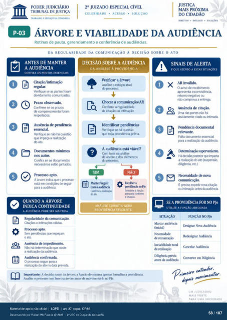

Transcrição automática em português, ainda não revisada. Confira grafia, prazos e termos jurídicos na imagem e no PDF antes de utilizar.
TRARAI.H) A SERVIÇO DA CIDADANtA
CELERIDADE • ACESSO • SOLUÇÃO
DIREITOS • • sot.uçOES
ÁRVORE E VIABILIDADE DA AUDIÊNCIA
Rotinas de pauta. gerenciamento e conferência de audiências.
DA REGULARIDADE DA COMUNICAÇÃO À DECISÃO SOBRE
ANTES DE MANTER
A AUDIÊNCIA
CONFIRA OS PONTOS ESSENCIAIS
Citaçào/intimaçáo Verifique se as partes foram
&vdamente comunicadas. Confirrne os
comparecimento foram mv»itados.
de Verifique há questão
que a ato
Confira se cx necessários estào juntados.
A árvore iMica qtn 0 prXesX) está em
para a audiérria.
QUANDO A ÁRVORE
INDICA CONTINUIDADE
A AUDIÊNCIA PODE SER MANTIDA
e válidas. gpndéncias
O ata AUSéncia de
há determinaçü) que obste a da audiérwia
O prcx:esso segue para a do ato na data grevista.
DECISÃO SOBRE A AUDIÊNCIA
DA ANÁLISE À PROVIDÊNCIA
Verificar a árvore Analise o estágio atual
do Checar a comunicação/AR
Confirme a regularidade da citação ou intimação.
Identificar pendências Verifique se há questão
que exija providência prévia. A audiência está viável?
Com base na análise da árvore e dos elementos
do SIM
NÃO a funç&3
ANALISE CORRETA GERA
PROVIDÊNCIA EFICIENTE.
O ATO
SINAIS DE ALERTA
FIQUE ATENTO A ESTAS SITUAÇÕES
AR inválido. O aviso de recebimento
apresenta Inconststéncia. retorno negativo ou
nao ccxnprova a entrega Ausência de citação.
Urna das partes nao foi citada titinuia
Pendência dcxumental relevante.
Falta dcxurnento essencial ç»ra a realiz*) da audiência
stiFrveniente. Há ;nsterü we inrzta
a realizaçü) ato (suscmsào. diltgéncia. etc.i
Necessidade de nova comunicação.
É roa ou utes auürtia
SE A PROVIDÊNCIA FOR NO PJe
UTILIZE A FUNÇÃO ADEQUADA
SITUAÇÃO
Marcar audiência
FUNÇÃO NO PJe
Iksignar Nova Audiência (inicial)
Redesignar Au&ncia de
Inviabilidade total Cancelar Audiência
de realizaçào Diligência Févia
em antes da audiência
Imrxn•tante: A decisão da árvore: a função do sistema aFnas formaliza a Analise o prrx•esg) com base na árvore antes de movimentá-lo no PJe.
ezeder,
UM JUDICIÁRIO
MAIS FORTE
PARA UMA SOCIEDADE
Ver também o infográfico original (página 58)
